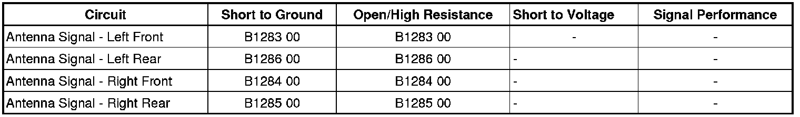

B1283
DTC B1283-B1286
Diagnostic Instructions
* Perform the Diagnostic System Check - Vehicle (Initial Inspection and Diagnostic Overview) prior to using this diagnostic procedure.
* Review Strategy Based Diagnosis (Initial Inspection and Diagnostic Overview) for an overview of the diagnostic approach.
* Diagnostic Procedure Instructions (Initial Inspection and Diagnostic Overview)provides an overview of each diagnostic category.
DTC Descriptors
DTC B1283 00
- Television Antenna 1 Performance
DTC B1284 00
- Television Antenna 2 Performance
DTC B1285 00
- Television Antenna 3 Performance
DTC B1286 00
- Television Antenna 4 Performance
Diagnostic Fault Information

Circuit/System Description
The TV antenna signal circuits consists of 4 individual coaxial cables that carry the TV signal information received by the TV antenna through the TV antenna amplifier to the TV antenna module.
Conditions for Running the DTC
* Ignition ON.
* Battery voltage must be between 9-16 volts.
Conditions for Setting the DTC
The TV antenna module detects a open or short to ground on one or more of the 4 TV antenna coax cables for 20 seconds.
Action Taken When the DTC Sets
The TV antenna module disables all 4 coax cables when a short to ground is detected. When the TV antenna detects an open/high resistance in one or more TV antenna coax inputs, the unaffected TV antenna coax inputs will continue to operate.
Conditions for Clearing the DTC
* The condition responsible for setting the DTC no longer exists.
* The DTC clears after the TV function has been cycled OFF then ON.
Reference Information
Schematic Reference
Video System Schematics (Video System Schematics)
Connector End View Reference
Component Connector End Views (Connector Views)
Description and Operation
Video Entertainment System Description and Operation (Video Entertainment System Description and Operation)
Electrical Information Reference
* Circuit Testing (Component Tests and General Diagnostics)
* Connector Repairs (Component Tests and General Diagnostics)
* Testing for Intermittent Conditions and Poor Connections (Component Tests and General Diagnostics)
* Wiring Repairs (Component Tests and General Diagnostics)
Scan Tool Reference
Control Module References (Programming and Relearning)for scan tool information
Circuit/System Testing
1. Ignition OFF, disconnect the appropriate antenna harness connector at the TV tuner and the harness connector at the inoperative antenna amplifier.
2. Test for less than 5 ohms of resistance between the two ends of the coax cable center conductor.
• If greater than the specified range, replace the antenna coax cable.
3. Test for less than 5 ohms of resistance between the two ends of the coax cable outer shield.
• If greater than the specified range, replace the antenna coax able.
4. Test for infinite resistance between the antenna coax center conductor and the outer shield.
• If less than the specified range, replace the antenna coax cable.
5. Connect the harness connector at the TV tunner.
6. Ignition ON, TV ON, wait 20 seconds, test for more than 1 volt at the coax cable center conductor terminal 2.
• If less than the specified value, replace the TV tuner.
7. Ignition OFF, disconnect the harness connector at the appropriate TV antenna.
8. Test for less than 5 ohms of resistance between the two ends of the TV antenna coax cable center conductor.
• If greater than the specified range, replace the TV antenna coax cable.
9. Test for less than 5 ohms of resistance between the two ends of the TV antenna coax cable outer shield.
• If greater than the specified range, replace the TV antenna coax able.
10. Test for infinite resistance between the TV antenna coax center conductor and the outer shield.
• If less than the specified range, replace the TV antenna coax cable.
11. Ignition OFF, TV OFF, connect the harness connector at the antenna amplifier.
12. Ignition ON, TV ON, wait 20 seconds, test for more than 1 volt at the TV antenna coax cable center conductors.
• If less than the specified value, replace the antenna amplifier.
13. If all circuits test normal, replace the inoperative TV antenna.
Repair Instructions
Perform the Diagnostic Repair Verification (Verification Tests) after completing the diagnostic procedure.
* Television Antenna Amplifier Replacement (Front) (Television Antenna Amplifier Replacement (Front))Television Antenna Amplifier Replacement (Rear) (Television Antenna Amplifier Replacement (Rear))
* Television Antenna Module Replacement (Service and Repair)